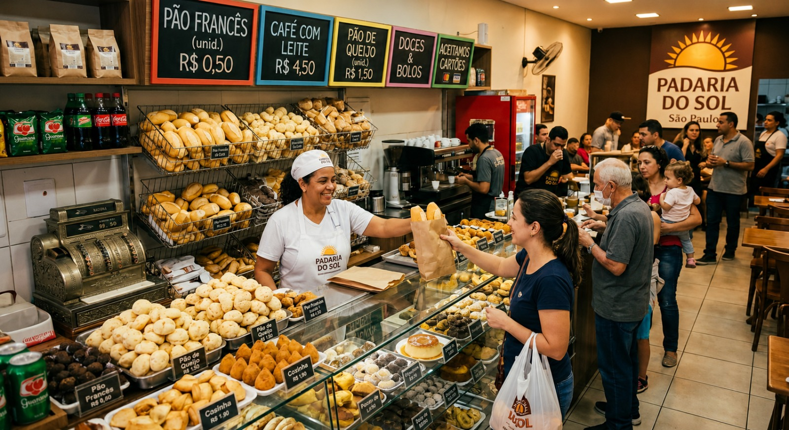

Detecção de gás em tempo real que salva vidas.
A SENTRYX, com IA integrada, monitora seu espaço continuamente e detecta vazamentos perigosos antes que se tornem uma ameaça.
Sobre o nosso produto
Veja de perto o design, os detalhes internos e a presença do sensor que ajuda a proteger ambientes com gás todos os dias.
Detecte riscos antes que eles se tornem um problema
Vazamentos de gás são invisíveis, mas os riscos são reais. A SENTRYX detecta sinais antes que se tornem perigosos, oferecendo monitoramento contínuo e alertas imediatos para garantir mais segurança no seu dia a dia.

Quem usa SENTRYX

Pequenos negócios
Ideal para padarias, mercados, mercearias e outros pequenos estabelecimentos que precisam de mais segurança no ambiente.
Residências familiares
Perfeita para casas e apartamentos, a SENTRYX ajuda famílias a terem mais tranquilidade, proteção e resposta rápida em situações de risco.
Restaurantes e cozinhas profissionais
Uma solução eficiente para ambientes com uso intenso de gás, oferecendo mais controle, prevenção e segurança operacional.
Conheça a TRYX
A IA que entende alertas, histórico e risco em tempo real.
A TRYX é a assistente inteligente oficial do ecossistema SENTRYX. Ela transforma alertas de vazamento de gás em respostas claras, rápidas e fáceis de acompanhar.
- Envia avisos imediatos quando um risco é detectado.
- Organiza o histórico e ajuda a enxergar padrões.
- Orienta decisões com mais segurança e eficiência.

Nossa Comunidade
Famílias, comércios e empresas que confiam na SENTRYX para proteger vidas através da detecção inteligente de vazamentos de gás GLP e natural.